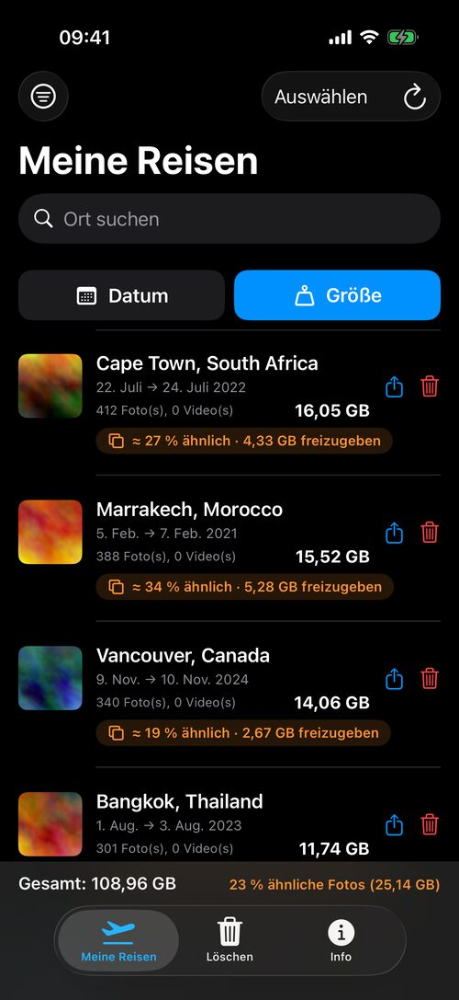
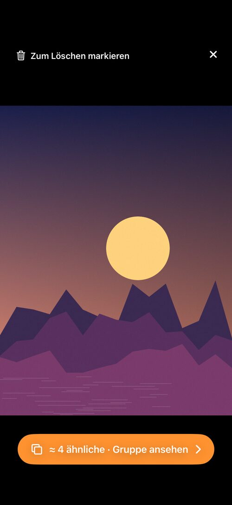
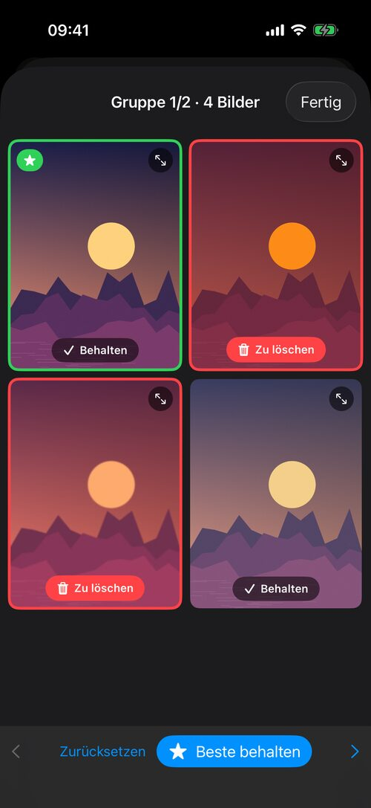
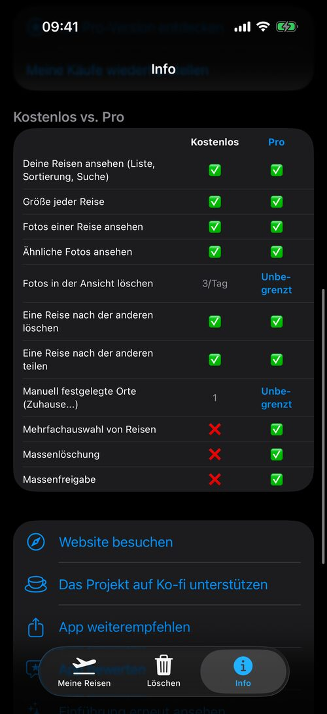

Endlich eine einfache Möglichkeit, alte Reisen aufzuräumen
TripSweep gruppiert deine Fotos und Videos nach Aufenthalt, zeigt, was Platz beansprucht und wie viel davon nahezu doppelte Aufnahmen sind, und lässt dich dann das beste Bild behalten und den Rest löschen — ohne dass deine Daten jemals irgendwohin gesendet werden.
→ Entdecke auch PhotoCull für Mac, die Desktop-App, die deine Fotos sortiert

Ein Blick auf die App



Was die App kann
Automatische Gruppierung nach Aufenthalt
Deine Fotos und Videos werden nach Reise gruppiert — unter Berücksichtigung von Zeit und Ort, damit zwei verschiedene Reiseziele nie vermischt werden. Die Aufenthalte werden auf deinem iPhone gespeichert: Die Liste erscheint beim Start sofort und aktualisiert sich dann im Hintergrund.
Ähnliche Fotos, für dich gefunden
TripSweep analysiert deine Fotos im Hintergrund auf deinem iPhone mit Apples Vision-Framework. Jeder Aufenthalt zeigt, wie viel davon nahezu doppelt ist („≈ 27 % ähnlich · 4,3 GB freizugeben“) — ein guter Grund, zum Aussortieren zurückzukommen.
Vergleichen und das beste wählen
Öffne eine Gruppe ähnlicher Fotos: Hochformat nebeneinander, Querformat untereinander, nie beschnitten. Das beste Bild wird vorgeschlagen (Schärfe, Apples Ästhetik-Bewertung, Gesichter), Serienbilder werden automatisch gruppiert und deine Favoriten werden nie zum Löschen markiert.
Die Größe, die zählt
Sortiere Aufenthalte mit einer großen Schaltfläche nach Datum oder Größe. Eine Fußzeile zeigt das Gesamtgewicht deiner Fotos und den Anteil ähnlicher Fotos — damit du auf einen Blick siehst, wo sich Aussortieren lohnt.
Kostenlos ansehen, einfach aussortieren
Ein Tipp auf einen Aufenthalt öffnet die Ansicht — kostenlos. Markiere jedes Foto zum Löschen, ähnlich oder nicht, im Raster oder im Vollbild; eine große Schaltfläche springt direkt zur Gruppe, wenn ein Foto ähnliche hat.
Löschen ohne langes Überlegen
Immer über „Kürzlich gelöscht“, nie ein sofortiges endgültiges Löschen. Die kostenlose Version enthält 3 Löschvorgänge pro Tag aus der Ansicht; Pro hebt die Grenze auf.
Sichern oder an die schicken, die dabei waren
Exportiere einen ganzen Aufenthalt auf deinen Mac oder in Dateien, bevor du ihn löschst, oder teile ihn direkt (AirDrop, Dateien...) mit Freunden und Familie — nichts geht endgültig verloren.
Eigene Orte
Lege eigene Orte fest (Zuhause, Arbeit...) und schließe sie aus der Liste aus, um nur echte Reisen zu behalten.
100% offline
Kein Foto und kein Standort verlässt jemals dein iPhone. Ortserkennung und Erkennung ähnlicher Fotos laufen vollständig auf dem Gerät, ohne Verbindung, ohne Konto, ohne Drittanbieterdienste.
In 5 Sprachen verfügbar
Französisch, Englisch, Italienisch, Deutsch, Spanisch — die App passt sich automatisch an die Sprache deines iPhones an, im Hoch- wie im Querformat.
Dein Datenschutz wird ernst genommen
TripSweep sammelt, sendet oder teilt niemals deine Fotos, Videos oder Standortdaten. Die gesamte Verarbeitung — einschließlich der Ortserkennung — erfolgt lokal auf deinem iPhone.
Vollständige Datenschutzerklärung lesen